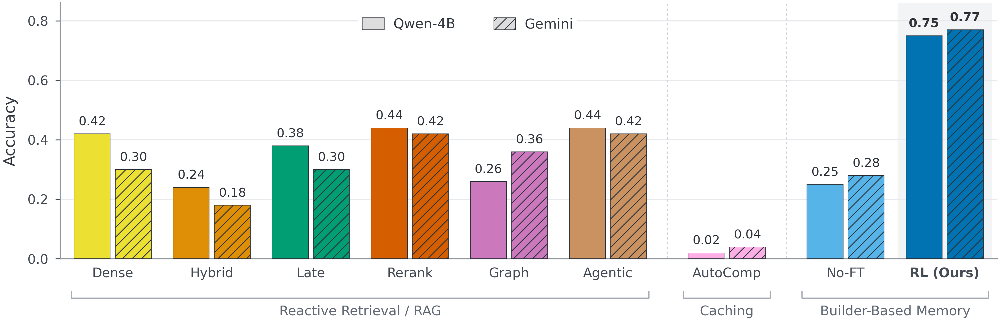
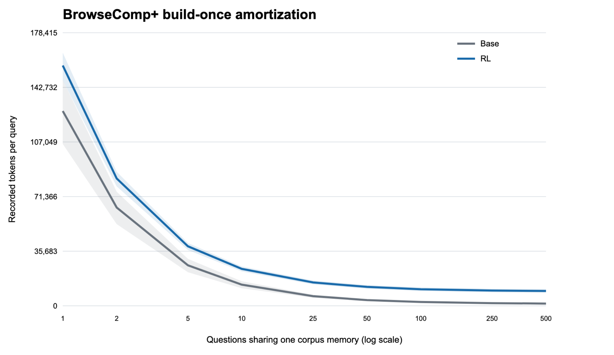
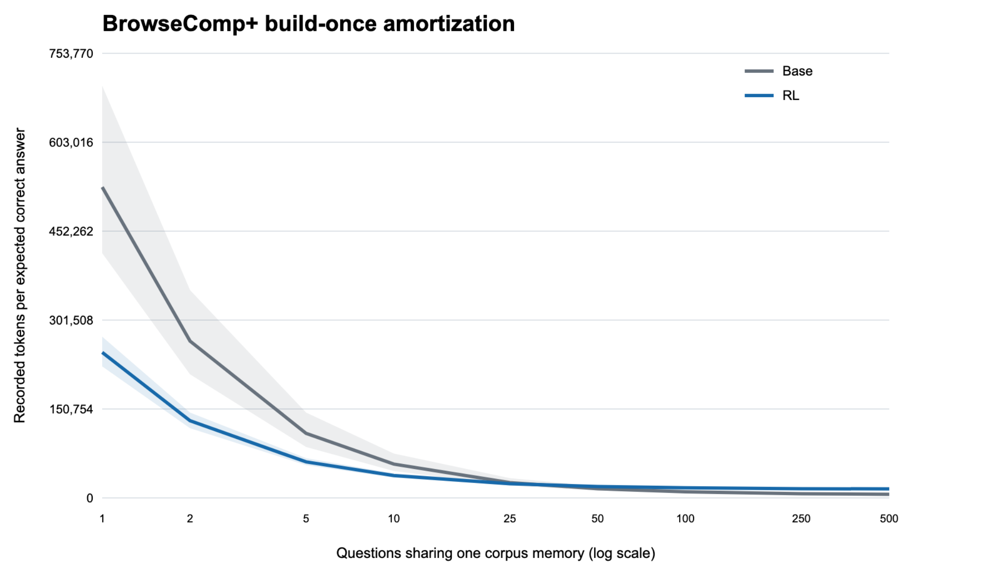
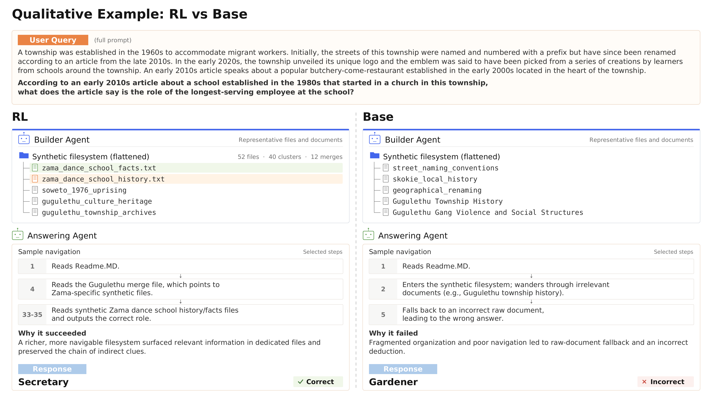

Create
Synthesize a new file from selected raw documents or existing synthetic files, retaining source links.
Anticipatory memory for long-context agents
Librarian Agents turn raw document corpora into reusable, provenance-linked filesystems before queries arrive, moving repeated retrieval work into an amortized construction phase.
Reasoning over long document contexts remains a challenge for large language models (LLMs). Standard retrieval methods are inherently reactive, bottlenecking agents with complex, cross-document reasoning at inference time. Existing approaches that pre-compute corpus structure, such as knowledge graphs, often fall short due to their reliance on rigid heuristics such as identifying interdocument relationships via named entity recognition. We propose an anticipatory approach to memory: proactively reorganizing unstructured document corpora to efficiently serve diverse future queries. This pre-computation synthesizes and restructures information within documents in advance, significantly improving an answering agent's downstream performance. While agentic scaffolds (e.g., Claude Code) are heavily trained to navigate and extend filesystems while solving the task currently in front of them, they do not pre-construct one in anticipation of future queries that our approach aims to do. We introduce Librarian Agents, a novel framework that restructures unstructured corpora into file-based memories arranged around the operations that LLM agents already perform well, such as reading summaries and following links. Librarian Agents is trained to maximize downstream success rate via end-to-end reinforcement learning. Empirically, Librarian Agents improves accuracy over the best performing baseline by 33 points on BrowseComp+ and additionally generalizes to out-of-distribution corpora such as BRIGHT with a 31 point increase on average.
Memory construction is modeled as a finite-horizon MDP. At each step, the builder observes the current filesystem and applies one discrete augmentation. GRPO trains the builder using changes in answerability measured every eight turns, together with a terminal answer-correctness reward from a frozen answering agent. The builder never sees the evaluation questions during construction.

MDP definition. Raw documents remain immutable while the builder constructs an active synthetic filesystem over several rounds. It creates source-linked files, merges related artifacts into a hierarchy, deletes redundant synthetic files, and stops when the answer-facing memory is ready.
Synthesize a new file from selected raw documents or existing synthetic files, retaining source links.
Combine related synthetic files into a higher-level summary, index, or directory-like artifact.
Prune redundant or unhelpful synthetic files without removing raw documents from fallback access.
End construction and return the current filesystem as the reusable memory artifact.
The answering agents stay frozen, so the comparisons isolate the usefulness of the constructed memory. A builder trained on BrowseComp+ improves in-domain question answering and transfers to BRIGHT without task-specific fine-tuning.

| Answering agent | Dense | Hybrid | Late interaction | Rerank | GraphRAG | Agentic RAG | AutoComp. | No FT | Librarian |
|---|---|---|---|---|---|---|---|---|---|
| Qwen3.5-4B | 0.42 | 0.24 | 0.38 | 0.44 | 0.26 | 0.44 | 0.02 | 0.25 | 0.75 |
| Gemini 3.1 Flash Lite | 0.30 | 0.18 | 0.30 | 0.42 | 0.36 | 0.42 | 0.04 | 0.28 | 0.77 |
The BrowseComp+-trained builder constructs one reusable filesystem per domain before seeing any evaluation question. We evaluate 150 questions, with 50 each from AoPS, Biology, and Stack Overflow, using a frozen Qwen3.5-4B answering agent.
| Domain | Dense pass@1 | Librarian pass@1 | Dense pass@4 | Librarian pass@4 |
|---|---|---|---|---|
| AoPS | 0.32 | 0.36 | 0.38 | 0.52 |
| Biology | 0.20 | 0.35 | 0.32 | 0.62 |
| Stack Overflow | 0.12 | 0.86 | 0.18 | 0.94 |
| Average | 0.21 | 0.52 | 0.29 | 0.69 |
Dense retrieval is the strongest baseline on average. Pass@1 is mean per-response accuracy; pass@4 measures whether at least one of four independently sampled answers is correct. The filesystem is shared across answers.
| Domain | BM25 | Dense | Hybrid | Rerank | Agentic | Late interaction | GraphRAG | AutoComp. | Librarian |
|---|---|---|---|---|---|---|---|---|---|
| AoPS | 0.31 / 0.38 | 0.32 / 0.38 | 0.33 / 0.38 | 0.32 / 0.38 | 0.29 / 0.38 | 0.29 / 0.38 | 0.13 / 0.16 | 0.06 / 0.06 | 0.36 / 0.52 |
| Biology | 0.18 / 0.28 | 0.20 / 0.32 | 0.14 / 0.22 | 0.14 / 0.26 | 0.17 / 0.28 | 0.18 / 0.26 | 0.05 / 0.06 | 0.06 / 0.06 | 0.35 / 0.62 |
| Stack Overflow | 0.09 / 0.18 | 0.12 / 0.18 | 0.07 / 0.18 | 0.06 / 0.12 | 0.07 / 0.18 | 0.07 / 0.16 | 0.02 / 0.04 | 0.02 / 0.02 | 0.86 / 0.94 |
| Average | 0.19 / 0.28 | 0.21 / 0.29 | 0.18 / 0.26 | 0.17 / 0.25 | 0.17 / 0.28 | 0.18 / 0.27 | 0.06 / 0.09 | 0.05 / 0.05 | 0.52 / 0.69 |
Construction is paid once per corpus. On 20 synthetic queries per document set, the trained builder’s filesystem raises accuracy from 0.24 to 0.64. The answering agent uses 9,346 tokens per query; including amortized construction brings the total to roughly 18K tokens per query.
| Memory / retrieval | Accuracy | Construction tokens |
|---|---|---|
| GraphRAG | 0.36 | 11,923 |
| AutoCompaction | 0.04 | 501,637 |
| Builder (no fine-tuning) | 0.28 | 127,683 |
| Librarian Agents | 0.77 | 178,926 |
| Builder | Accuracy | Answer tokens / query | Files / query |
|---|---|---|---|
| Base builder | 0.24 | 1,238 | 2.72 |
| Librarian Agents | 0.64 | 9,346 | 26.90 |


At ten queries per corpus, Librarian Agents use 33.8% fewer recorded tokens per expected correct answer than the base builder (RL/base ratio 0.662; 95% CI 0.504–0.836). Raw recorded tokens per query remain higher. These reuse curves report construction and navigation tokens together, with and without normalization by answer quality.
The qualitative results show why the aggregate gains are possible: the builder learns to cover more future queries, preserve fallback paths to raw evidence, and organize information in a form that an answering agent can traverse efficiently.

Recovery through provenance. On a fine-grained BrowseComp+ query, the answering agent finds that the synthetic filesystem is missing a needed relation and follows provenance links back to a small set of raw files. The fallback path lets it verify details without enumerating the full corpus.
Provenance is useful only if the constructed filesystem gets the answerer close to the right part of the corpus. The qualitative comparison below isolates that construction step: the RL-trained builder produces a broader and more navigable workspace, while the base builder leaves the answerer with fragmented evidence.

RL vs. base construction. On the same BrowseComp+ document set, the trained builder creates a broader, more coherent set of query-relevant files. The base builder leaves a fragmented organization that is harder for the answering agent to navigate.
GRPO trains the builder using periodic changes in answerability and terminal answer correctness. The primary experiment applies no explicit construction-cost, navigation-cost, or filesystem-structure penalties, so the richer organization emerges from optimizing downstream answering success.

Training curve. Aggregate rollout reward increases during GRPO training on BrowseComp+ as the builder learns to construct more answerable memories. The curve is smoothed with an exponential moving average.
The current evaluation focuses on question answering over static corpora. Updating anticipatory memories as documents are added, edited, or removed remains open. Scaling to very large collections may also require pairing the builder with clustering or retrieval so construction does not require the full corpus in context.
Synthetic memory construction is still compression. A finite set of generated artifacts cannot anticipate every needle-in-a-haystack query, and over-compressed or hallucinated files could steer an answerer toward the wrong conclusion. Provenance links reduce this risk by preserving raw-document fallback paths, but answerers must still decide when to verify synthesized claims against source evidence.
@misc{singh2026librarianagents,
title = {Librarian Agents: Anticipatory Filesystem Construction via Reinforcement Learning},
author = {Anikait Singh and Teresa Zhang and Yoonho Lee and Roshen Sanjay Nair and Aviral Kumar and Chelsea Finn},
year = {2026},
url = {https://librarian-agents.github.io/}
}